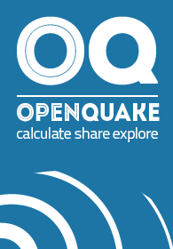
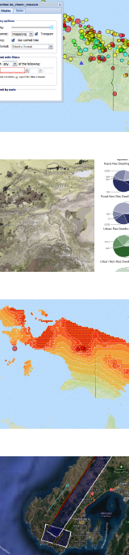

<!--********
  *********
  *********
  This is a temporary pages TODO remove it when the customizable 
  categories can be implemented
  *********
  *********
-->

{% extends "site_base.html" %}
{% load i18n %}
{% load url from future %}

{% block title %} {% trans "Welcome!" %} - {{ block.super }} {% endblock title %}

{% block extra_head %}
    {{block.super}}
    <link href="{{ STATIC_URL }}css/oqplatform_index.css" rel="stylesheet"/>
{% endblock extra_head %}

{% block body %}
  <div class="span12">
    <div class="hero-unit">
      <div id="oq-context-ribbon">
        {% block oq_context_ribbon %}
          <!-- Subtemplates can add context-sensitive components to the page-->
        {% endblock oq_context_ribbon %}
      </div>
      <div id="oq-body-heading">
        {% block oq_body_heading %}
          <h1>{% trans "OpenQuake Data" %}</h1>
          <br />
        {% endblock oq_body_heading %}
      </div>
      <div id="oq-body-content">
        {% block oq_body_content %}
          <div class="oq-intro">
            <!-- Main page content goes here -->

            <a href="{% url 'isc_viewer' %}">Instrumental Catalogue</a></li> <br/>
            <br/><br/>

            <a href="{% url 'ghec_viewer' %}">Historical Catalogue</a></li> <br/>
            <br/><br/>

            <a href="{% url 'gaf_viewer' %}">Active Faults</a></li> <br/>
            <br/><br/>

            <a href="{% url 'geodetic' %}">Geodetic Strain</a></li> <br/>
            <br/><br/>

            <a href="{% url 'exposure' %}">Exposure</a></li> <br/>
            <br/><br/>

            <a href="{% url 'hazus' %}">Building Fractions</a></li> <br/>
            <br/><br/>

            <a href="/vulnerability/list/">Vulnerability</a></li> <br/>
            <br/><br/>

          </div>
        {% endblock oq_body_content %}
      </div>
      <div id="oq-body-sidebar">
        {% block oq_body_sidebar %}
          <div class="oq-btns">
            <br/><br/>
            <a class="btn btn-large" href="{% url "layer_browse" %}">
              {% trans "Explore Layers" %}
            </a>
            <a class="btn btn-large" href="{% url "maps_browse" %}">
              {% trans "Explore Maps" %}
            </a>
            
          </div>
        {% endblock oq_body_sidebar %}
      </div>
    </div>
  </div>
{% endblock body %}

{% block extra_script %}
    {{block.super}}
    {% include 'search_scripts.html' %}
{% endblock extra_script %}
